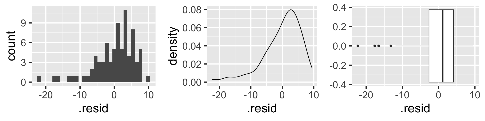

Rows: 188 Columns: 3
── Column specification ────────────────────────────────────────────────────────
Delimiter: ","
chr (1): country
dbl (2): life_expectancy_years_2011, female_literacy_rate_2011
ℹ Use `spec()` to retrieve the full column specification for this data.
ℹ Specify the column types or set `show_col_types = FALSE` to quiet this message.
Learning Objectives
Identify the aims of your research and see how they align with the intended purpose of simple linear regression
Identify the simple linear regression model and define statistics language for key notation
Illustrate how ordinary least squares (OLS) finds the best model parameter estimates
Solve the optimal coefficient estimates for simple linear regression using OLS
Apply OLS in R for simple linear regression of real data
Topics
LINE assumptions
checking assumptions
residual analysis
outlier detection
Next class???
What are the LINE conditions?
For “good” model fit and to be able to make inferences and predictions based on our models, 4 conditions need to be satisfied.
Briefly:
L inearity of relationship between variables
I ndependence of the Y values
N ormality of the residuals
E quality of variance of the residuals (homoscedasticity)
Body measurements from 507 physically active individuals
in their 20’s or early 30’s
within normal weight range.
Examples of Normal QQ plots (2/5)
Skewed right distribution
Examples of Normal QQ plots (3/5)
Long tails in distribution
Examples of Normal QQ plots (4/5)
Bimodal distribution
Examples of Normal QQ plots (5/5)
QQ plot of residuals of model1
`stat_bin()` using `bins = 30`. Pick better value with `binwidth`.

ggplot(aug1, aes(sample = .resid)) +stat_qq() +# pointsstat_qq_line() # line
Compare to randomly generated Normal QQ plots
How “good” we can expect a QQ plot to look depends on the sample size.
The QQ plots on the next slides are randomly generated
using random samples from actual standard normal distributions \(N(0,1)\).
Thus, all the points in the QQ plots should theoretically fall in a line
However, there is sampling variability…
Randomly generated Normal QQ plots: n=100
Note that stat_qq_line() doesn’t work with randomly generated samples, and thus the code below manually creates the line that the points should be on (which is \(y=x\) in this case.)
samplesize <-100rand_qq1 <-ggplot() +stat_qq(aes(sample =rnorm(samplesize))) +# line y=xgeom_abline(intercept =0, slope =1, color ="blue") rand_qq2 <-ggplot() +stat_qq(aes(sample =rnorm(samplesize))) +geom_abline(intercept =0, slope =1, color ="blue")rand_qq3 <-ggplot() +stat_qq(aes(sample =rnorm(samplesize))) +geom_abline(intercept =0, slope =1, color ="blue")rand_qq4 <-ggplot() +stat_qq(aes(sample =rnorm(samplesize))) +geom_abline(intercept =0, slope =1, color ="blue")
ggplot(aug1, aes(x = female_literacy_rate_2011, y = .resid)) +geom_point() +geom_abline(intercept =0, slope =0, color ="orange") +labs(title ="Residual plot")
E: Equality of variance of the residuals (Homoscedasticity)
The variance or, equivalently, the standard deviation of the responses is equal for all values of x.
This is called homoskedasticity (top row)
If there is heteroskedasticity (bottom row), then the assumption is not met.
\(R^2\) = Coefficient of determination
Another way to assess model fit
\(R^2\) = Coefficient of determination (1/2)
Recall that the correlation coefficient \(r\) measures the strength of the linear relationship between two numerical variables
\(R^2\) is usually used to measure the strength of a linear fit
For a simple linear regression model (one numerical predictor), \(R^2\) is just the square of the correlation coefficient
In general, \(R^2\) is the proportion of the variability of the dependent variable that is explained by the independent variable(s)
\[R^2 = \frac{\textrm{variance of predicted y-values}}
{\textrm{variance of observed y-values}} = \frac{\sum_{i=1}^n(\widehat{y}_i-\bar{y})^2}
{\sum_{i=1}^n(y_i-\bar{y})^2}
= \frac{s_y^2 - s_{\textrm{residuals}}^2}
{s_y^2}\]\[R^2 = 1- \frac{s_{\textrm{residuals}}^2}
{s_y^2}\] where \(\frac{s_{\textrm{residuals}}^2}{s_y^2}\) is the proportion of “unexplained” variability in the \(y\) values,
and thus \(R^2 = 1- \frac{s_{\textrm{residuls}}^2}{s_y^2}\) is the proportion of “explained” variability in the \(y\) values
\(R^2\) = Coefficient of determination (2/2)
Recall, \(-1<r<1\)
Thus, \(0<R^2<1\)
In practice, we want “high” \(R^2\) values, i.e. \(R^2\) as close to 1 as possible.
Calculating \(R^2\) in R using glance() from the broom package: